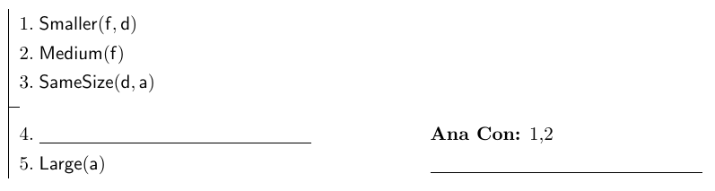
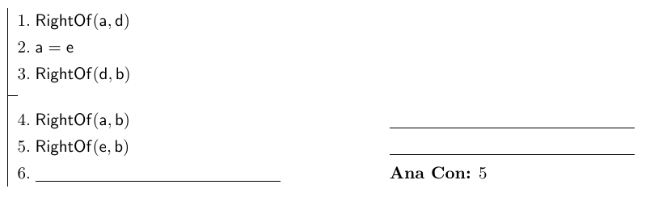

Introduction to Logic
Feb. 23, 2015Name:
100 points possibleConcepts: proof, counterexample, truth conditions, possibility, logical truth, truth table, reflexive, commutative, transitive, equivalent, inverse, semantics, syntax, idempotence, associative
- Argument 1

- Argument 2

Vera has never not gotten either an A or a B on any exam she has taken.